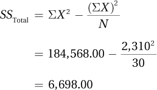

We’ll take a few shortcuts in calculating sums of squares for between-subjects, two-way ANOVA. Because SSTotal = SSBetween + SSWithin, if one calculates any two, one can figure out the missing sum of squares. And as SSBetween = SSRows + SSColumns + SSInteraction, once SSBetween is known, if we calculate SSRows and SSColumns, we can figure out SSInteraction by subtraction.
As shown in Table 12.21, the first step is to sum and square the data. These data are the raw data for the caffeine and sleep deprivation study. Of SSTotal, SSWithin, and SSBetween, the easiest to calculate are SSTotal and SSBetween. Following Equation 10.2, SSTotal is calculated as follows:

These data have been summed, squared, and arranged to expedite calculations of sums of squares for a between-subjects, two-way ANOVA.
Using Equation 10.3, SSBetween is
Then, SSWithin is calculated as
SSWithin = SSTotal – SSBetween
= 6,698.00 – 5,950.00
=748.00
474
The next step is to compute SSRows and SSColumns:
The final sum of squares, SSInteraction, is calculated by subtraction:
SSInteraction = SSBetween – SSRows – SSColumns
= 5,950.00 – 3,630.00 – 1,340.00
= 980.00